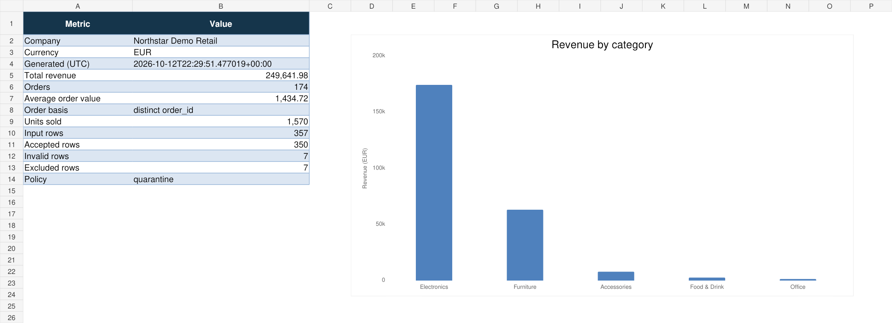

PYTHON AUTOMATION01
Business reporting,
without the repetitive work.
A configurable pipeline that turns CSV and Excel sales data into validated datasets, analytics, Excel dashboards and PDF reports.
- 100,000-row benchmark
- Excel and PDF reporting
- Automated CI checks
Benchmark uses synthetic sales data.
What’s inside
Multi-file ingestion, configurable validation policies, sales trends, formatted Excel workbooks and automated PDF generation. Includes synthetic example data and generated reports you can inspect before installing.